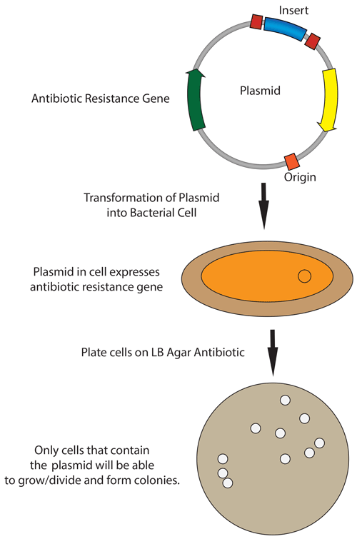

Bacterial transformation¶
Cloning summary¶
In molecular cloning, we transform DNA of interest into competent bacterial cells. There are several different competence methods that require different transformation methods. After transformation, bacteria that have incorporated the DNA of interest are selected for using various antibiotics.
Heat-shock transformation (chemically competent bacteria)¶
Estimated time
1 to 2 hours
Take chemically competent cells out of -80°C and thaw on ice (approximately 20-30 mins).
Remove agar plates (containing the appropriate antibiotic) from storage at 4°C and let warm up to room temperature and then (optional) incubate in 37°C incubator.
Mix 1 - 5 ul of DNA (usually 10 pg - 100 ng) into 20-50 uL of competent cells in a microcentrifuge or falcon tube. GENTLY mix by flicking the bottom of the tube with your finger a few times.
Note
Transformation efficiencies will be approximately 10-fold lower for ligation of inserts to vectors than for an intact control plasmid.
Incubate the competent cell/DNA mixture on ice for 20-30 mins.
Heat shock each transformation tube by placing the bottom 1/2 to 2/3 of the tube into a 42°C water bath for 30-60 secs (45 secs is usually ideal, but this varies depending on the competent cells you are using).
Put the tubes back on ice for 2 min.
Add 250-1,000 ul LB or SOC media (without antibiotic) to the bacteria and grow in 37°C shaking incubator for 45 min.
Note
This outgrowth step allows the bacteria time to generate the antibiotic resistance proteins encoded on the plasmid backbone so that they will be able to grow once plated on the antibiotic containing agar plate. This step is not critical for Ampicillin resistance but is much more important for other antibiotic resistances.
Plate some or all of the transformation onto a 10 cm LB agar plate containing the appropriate antibiotic.
Note
If the culture volume is too big, gently collect the cells by centrifugation and resuspend in a smaller volume of LB so that there isn’t too much liquid media on the agar plates. If the agar plate doesn’t dry adequately before the cells begin dividing, the bacteria diffuse through the liquid and won’t grow in colonies.
Incubate plates at 37°C overnight.
Note
Use 30 °C if you are working with unstable vectors (e.g. repeats and/or viral vectors)